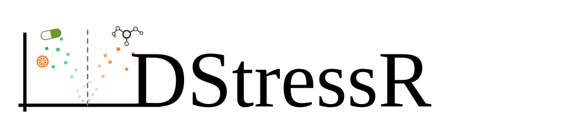
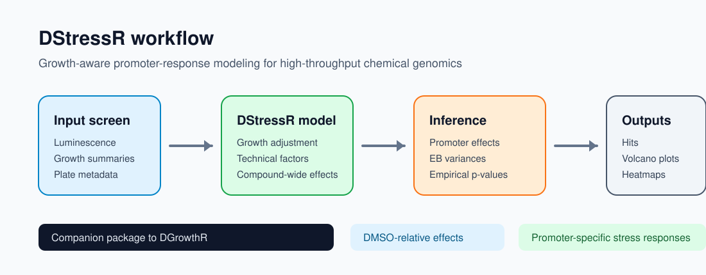

This repository hosts the DStressR R package and companion analysis workflow for high-throughput bacterial chemical genomics screens. DStressR is designed to go hand in hand with DGrowthR: DGrowthR models bacterial growth curves, while DStressR models promoter-activity responses after accounting for growth, compound-wide effects, technical covariates, and promoter-specific uncertainty.

[!TIP]
DStressRis intended as the promoter-response counterpart toDGrowthR. The current default hit-determination workflow is based on the original exported luminescence and growth summaries; DGrowthR-derived growth parameters can be handed over explicitly for sensitivity analyses.
Installation Guide
To install the DStressR R package directly from this repository, first clone the repository and enter the cloned folder. Then execute the following commands in R.
- Ensure that you have the
devtoolspackage installed. If not, you can install it using the following command:
# Install devtools
install.packages("devtools")
# Load the library
library(devtools)- Use the
installfunction to install theDStressRpackage:
install()For permutation-based empirical p-values, install the permApprox package:
remotes::install_github("stefpeschel/permApprox")Get started
DStressR exposes statistical analyses through a staged fit_destress() interface. The major choices are explicit: normalization, test statistic and p-value calculation, replicate aggregation, and p-value adjustment. Named presets reproduce the established workflows:
-
preset = "model"for the model-based DStressR analysis -
preset = "median_polish"for the original median-polish p-value workflow -
preset = "empty_vector_control"for the Empty Vector Control workflow
The model workflow starts from an assay prepared with prepare_assay():
library(DStressR)
screen <- simulate_screen(seed = 1)
assay <- prepare_assay(
screen,
promoter = "promoter",
compound = "compound",
control = "DMSO",
lux = "LUX.AUC_16",
growth = "od_16h.measured",
batch = "batch",
replicate = "replicate"
)
fit <- fit_destress(
assay,
preset = "model",
technical = c("batch", "replicate"),
empirical_bayes = TRUE
)
tab <- results(fit)
hits <- call_hits(tab, fdr = 0.05, effect = "specific_effect")Equivalently, using staged options directly:
fit <- fit_destress(
screen,
normalization = "model",
testing = "moderated_t",
aggregation = "none",
adjustment = "global",
promoter = "promoter",
compound = "compound",
control = "DMSO",
lux = "LUX.AUC_16",
growth = "od_16h.measured",
growth_exponent = "estimate",
batch = "batch",
replicate = "replicate",
technical = c("batch", "replicate")
)Growth-response normalization for the model path is controlled in prepare_assay() or by passing the same arguments through fit_destress(). Use growth_exponent = 1 for the fixed log2(LUX / OD) normalization, growth_exponent = "estimate" to estimate promoter-specific alpha_g values from controls, or pass a named promoter vector.
The median-polish compatibility workflow starts from the original exported expression table and DMSO library-well IDs:
legacy <- fit_destress(
expression_df,
preset = "median_polish",
response = "log2.auc.16hmeasured.normed",
control = dmso_srn_codes,
exclude = dmso_noisy_srn_codes,
normality = TRUE
)
dmso_normality <- legacy$normality_results
replicate_pvalues <- legacy$replicate_results
hit_table <- legacy$pair_resultsThe Empty Vector Control workflow uses the same named interface:
evc <- fit_destress(
expression_df,
preset = "empty_vector_control",
response = "log2.lux.normed.centered",
empty_vector_promoter = "PEVC3",
control = dmso_srn_codes,
exclude = dmso_noisy_srn_codes
)
hit_table <- evc$pair_resultsHow to use DStressR
The typical DStressR analysis starts from promoter-level luminescence and growth summaries, together with compound, promoter, replicate, plate, and batch metadata.
library(DStressR)
assay <- prepare_assay(
expression_df,
promoter = "promoter",
compound = "srn_code",
control = "DMSO",
lux = "LUX.AUC_16",
growth = "od_16h.measured",
batch = "batch",
replicate = "replicate"
)
fit <- fit_destress(
assay,
normalization = "model",
testing = "moderated_t",
aggregation = "none",
adjustment = "global",
technical = c("batch", "replicate"),
)
tab <- results(fit)
hits <- call_hits(tab, fdr = 0.05, effect = "specific_effect")The fitted model separates two related quantities:
-
total_effect: DMSO-relative promoter response for a compound. -
specific_effect: promoter-specific response after subtracting the compound-wide effect shared across promoters.
This distinction is important for compounds that globally perturb growth, luminescence, metabolism, or assay chemistry.
The compatibility wrapper fit_workflow() and the lower-level functions fit_median_polish() and fit_empty_vector_control() remain available for existing scripts. New analyses should prefer fit_destress() so that the selected statistical path is explicit in the code.
Standard plots
DStressR includes standard output plots for common screening summaries, including volcano plots, promoter-compound response heatmaps, clustered heatmaps, effect histograms, and empirical-Bayes variance diagnostics.
plot_volcano(
tab,
effect = "specific_effect",
padj = "specific_padj",
top_n = 12,
top_promoters = 6
)
plot_response_heatmap(
tab,
value = "specific_effect"
)Required input shape
DStressR expects a long promoter-compound table with one row per measured promoter-compound-replicate observation. In a complete rectangular screen, the number of rows is approximately:
n_promoters x (n_compound_wells + n_control_wells) x n_replicatesAdditional rows can occur when the same design is repeated across batches, library plates, measurement plates, or experimental days.
At minimum, the expression table must contain columns that identify:
- promoter or reporter construct, for example
promoter - compound or library well, for example
compound,srn_code, orlibplatepluswell - negative-control compound, usually
DMSO - luminescence summary, for example
LUX.AUC_16 - growth summary, for example
od_16h.measured - replicate and technical covariates, for example
replicate,batch,plate, orlibplate
These columns are mapped explicitly in prepare_assay(), so projects can use their own column names:
assay <- prepare_assay(
expression_df,
promoter = "promoter",
compound = "srn_code",
control = "DMSO",
lux = "LUX.AUC_16",
growth = "od_16h.measured",
batch = "batch",
plate = "libplate",
replicate = "replicate"
)Campylobacter workflow input files
For the original Campylobacter promoter-library workflow, DStressR includes the helper read_campylobacter_expression(). It joins two exported files:
-
expression_values.tsv.gzA long measurement table with one row per promoter-library-well-replicate observation. It should contain either:
-
srn_code, a unique library-well identifier, or - both
libplateandwell, from whichsrn_codeis reconstructed aspaste(libplate, well, sep = "_").
It should also contain the promoter identifier, luminescence summary, growth summary, and technical covariates used downstream in
prepare_assay(). -
-
LibMap.txtA library annotation table with one row per compound/library well. Required columns are:
Library plateWellProductNameCatalog Number
The helper converts these to a compound key
srn_code = paste0("lp", Library plate, "_", Well)and joinsProductNameandCatalog Numberonto the expression table.
expression_df <- read_campylobacter_expression(
expression_file = "expression_values.tsv.gz",
libmap_file = "LibMap.txt"
)The returned object has the same number of rows as expression_values.tsv.gz, with compound annotations added. This joined table can then be passed directly to prepare_assay().
To reproduce the original median-polish workflow, provide the DMSO library-well IDs and optional noisy-DMSO well IDs from LibMap.txt:
libmap <- read.delim("LibMap.txt", check.names = FALSE)
libmap$srn_code <- paste0("lp", libmap[["Library plate"]], "_", libmap[["Well"]])
dmso_srn_codes <- libmap$srn_code[libmap$ProductName == "DMSO"]
dmso_noisy_srn_codes <- libmap$srn_code[libmap$ProductName == "DMSO noisy"]
legacy <- fit_destress(
expression_df,
preset = "median_polish",
response = "log2.auc.16hmeasured.normed",
control = dmso_srn_codes,
exclude = dmso_noisy_srn_codes,
normality = TRUE
)
dmso_normality <- legacy$normality_results
replicate_pvalues <- legacy$replicate_results
hit_table <- legacy$pair_resultsSalmonella Empty Vector workflow
The Salmonella workflow uses a stronger control design than DMSO-only normalization. In addition to DMSO wells, it includes Empty Vector Control reporters, especially PEVC3, which measure compound-specific background Lux signal without a promoter insert. DStressR exposes this baseline through fit_empty_vector_control().
The required processed expression table is the output of the Salmonella Lux-estimation step, usually lux_auc_filtered_median.tsv.gz. It is a long table with one row per promoter-library-well-replicate observation and contains:
promotersrn_codereplicatelog2.lux.normed.centered
The library map is LibMap.tsv.gz, with columns:
Library plateNew wellCatalog NumberProductName
expression_df <- read.delim(gzfile("lux_auc_filtered_median.tsv.gz"),
check.names = FALSE)
libmap <- read.delim(gzfile("LibMap.tsv.gz"), check.names = FALSE)
libmap$libplate <- sub("LibPlate", "lp", libmap[["Library plate"]])
libmap$srn_code <- paste(libmap$libplate, libmap[["New well"]], sep = "_")
dmso_srn_codes <- libmap$srn_code[libmap[["Catalog Number"]] == "DMSO"]
dmso_noisy_srn_codes <- libmap$srn_code[libmap[["Catalog Number"]] == "DMSO noisy"]
evc <- fit_destress(
expression_df,
preset = "empty_vector_control",
response = "log2.lux.normed.centered",
empty_vector_promoter = "PEVC3",
control = dmso_srn_codes,
exclude = dmso_noisy_srn_codes,
remove_promoters = "PmgrR"
)
replicate_pvalues <- evc$replicate_results
hit_table <- evc$pair_resultsOn the local Salmonella workflow output, this DStressR implementation recovers the original hit_table.tsv.gz numerically, including the final hit labels.
Optional DGrowthR handoff
If growth curves have already been modeled with DGrowthR, DStressR can use a chosen DGrowthR growth parameter as the growth column for a sensitivity analysis:
expression_df2 <- add_dgrowthr_growth(
expression_df,
object = dgrowthr_fit,
by = "curve_id",
model_covariate = "curve_id",
growth_metric = "OD_16",
output = "dgrowthr_od16"
)
assay <- prepare_assay(
expression_df2,
promoter = "promoter",
compound = "srn_code",
control = "DMSO",
lux = "LUX.AUC_16",
growth = "dgrowthr_od16"
)Analysis workflow
The analysis/ folder contains scripts used during model development and benchmarking against the original median-polish workflow, including p-value comparisons, empirical-Bayes diagnostics, response matrices, clustered heatmaps, network summaries, and empirical replicate/permutation tests.